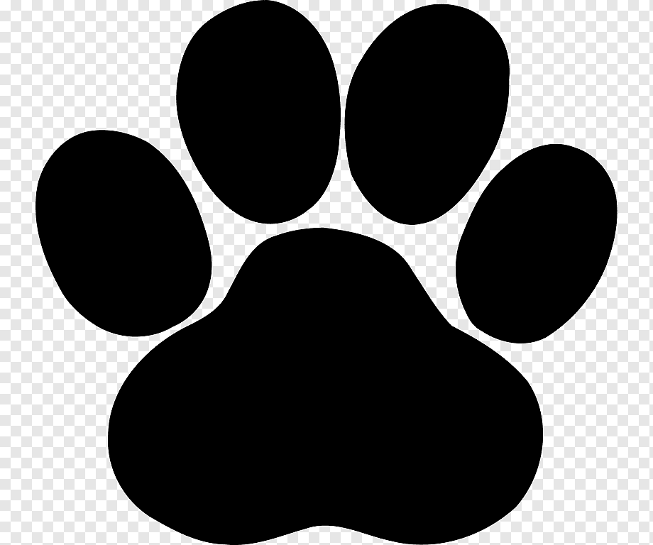
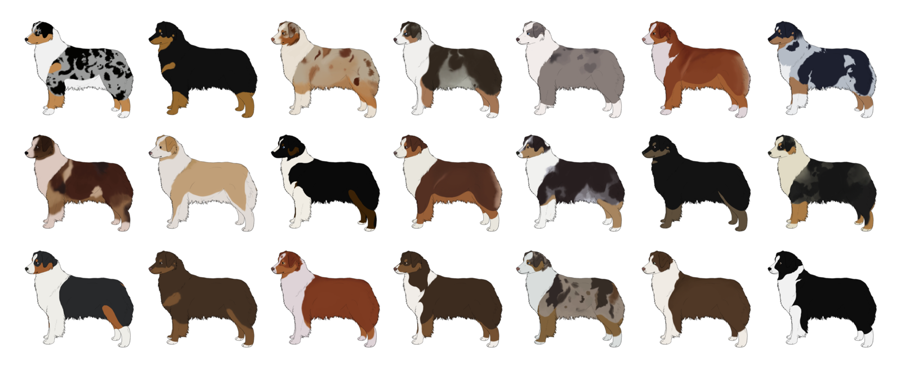

 Страна происхождения: США
Вес: кобели 25-30 кг, суки 18-25 кг
Рост (высота в холке): кобели 51-58 см, суки 46-53 см
Продолжительность жизни: 13-15 лет
У заводчиков существует две версии происхождения аусси, и обе на равных правах сопровождают большинство клубных описаний.
Согласно первой, родоначальница породы – Элиза Форлонг, известная в Австралии промышленница XIX века, основавшая крупнейшую на континенте сеть по производству шерсти. Её отары овец нуждались в постоянной охране от недружелюбной местной фауны, и нанятым пастухам поручили закупить или вывести идеального помощника.
За разведение собак отвечал выходец из Германии Йозеф Пабтс, который привёз с собой нескольких племенных кобелей немецкого тайгера. Однако старинная порода оказалась слишком агрессивной по отношению к овцам, регулярно кусая их и портя ценнейшую шерсть. Возникла необходимость «усмирить» последующие поколения, для чего в вязке принимали участие бордер-колли, бернский зенненхунд и разношёрстный австралийский кули.
Другая версия происхождения гласит, что окончательный облик породы утвердился только в США, куда потомки пастухов фабрики Форлонг попали в конце XIX столетия. Имена первых заводчиков тоже сохранились – это Хуанита Эли из Колорадо и Джей Сислер из Айдахо. Оба фермера разрабатывали сугубо служебных собак, ни о каком компанейском характере речи не было вплоть до 1957-го года, когда австралийцев впервые продемонстрировали на выставке.
Признание Кеннел Клубами затянулось почти на 20 лет, хотя щенков уже вовсю продавали по разным странам. Тогда же возникло сокращение аусси – короткое, запоминающееся и похожее на кличку слово легче вписывалось в документы с выставочными сертификатами. К 1977-му году только в Северной Америке было двадцать шесть питомников, и у профессиональных бридеров не оставалось поводов для отказа – породу наконец-то внесли во все существующие реестры.
Австралийская овчарка относится к средним породам с гендерными различиями в размерах особей. Высота кобелей колеблется в пределах 52-58 см, у сук обычно не превышает 46-53 см. Вес собаки может варьироваться от 18 до 30 кг.
Тело несколько вытянуто в длину, но общие размеры остаются сбалансированными, так что собака не выглядит приземистой. В сравнении с кобелями суки смотрятся изящнее и грациознее, но без намёка на тонкокостность.
Несмотря на то, что среди австралийских овчарок встречаются особи с разнообразными расцветками, а сама порода славится их неповторимостью, официальным стандартом признаются всего четыре типа окраса: чёрный, мраморно-голубой (с ним чаще всего ассоциируется аусси), красный и мраморно-красный. Во всех случаях допустимо наличие белых участков, но без излишеств. Обратите внимание на то, что глаза должны находиться в обрамлении цвета. По мере взросления шерсть немного темнеет.

Существуют также соболиный, графитовый, золотистый и тигровый окрасы, однако они не признаны официально.